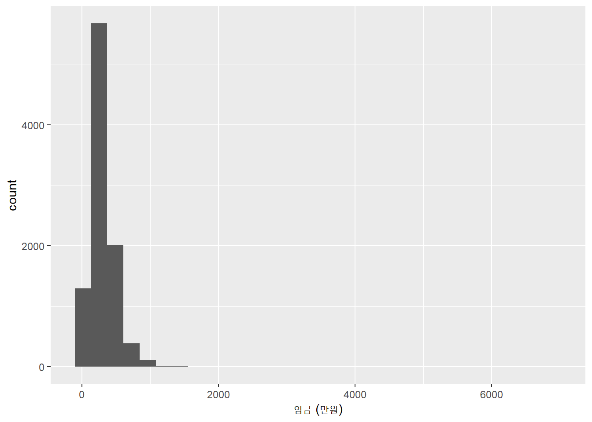
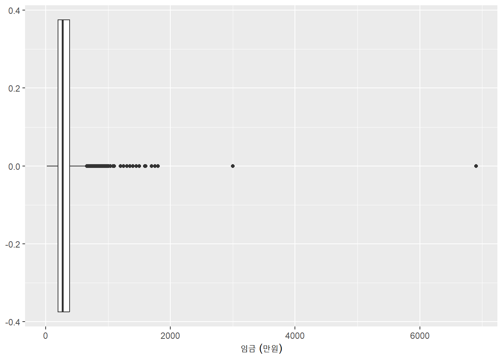
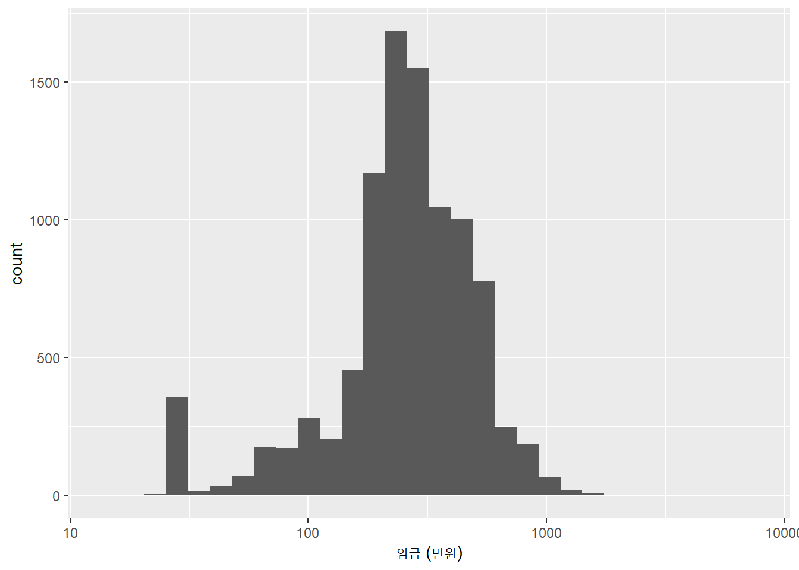
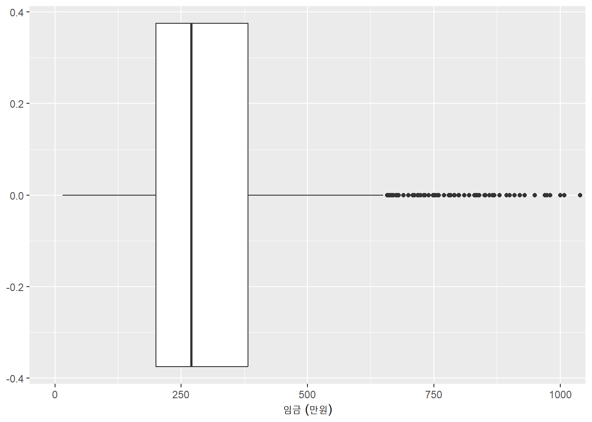
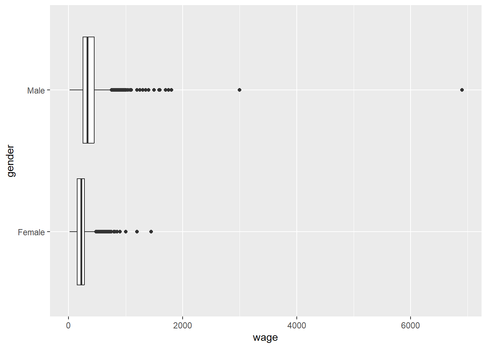
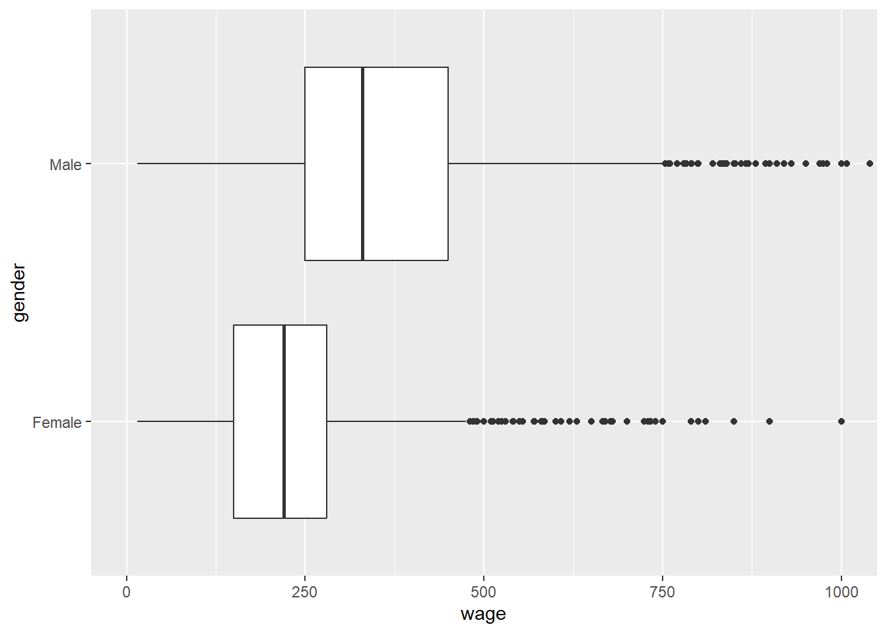
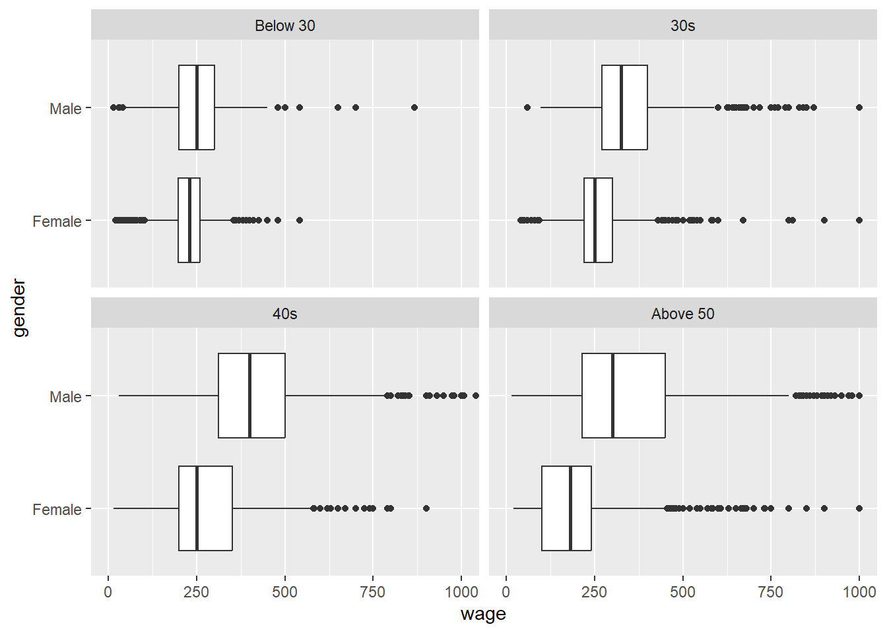

# 패키지 준비
library(tidyverse)
library(skimr)
library(janitor)
library(ineq) # 나중에 지니계수 구할 때만 한번 사용
library(knitr) # 데이터를 표로 깔끔하게 보여줄 때 사용
# 데이터 불러오기
klips27p_small <- read_csv("data/klips27p_small.csv")4주차. 도구 적용하기 (1): 근로자 수준 데이터
1 컴퓨터에 저장된 데이터 불러오기
데이터 파일의 형식에 맞추어
read_csv()또는readxl::read_excel()을 이용- 이번 학기 강의에서 사용할 데이터 파일은 거의 대부분
csv또는xlsx형태임
- 이번 학기 강의에서 사용할 데이터 파일은 거의 대부분
경로 (path): 컴퓨터의 파일 시스템 내에서 파일이 위치한 주소
- R 스크립트에서 파일을 열거나 저장하기 위해서는 파일 이름과 함께 경로를 명시해야 함
- 예를 들어,
read_csv("C:/Users/hmin/teaching/PDA/data/klips27p_small.csv")
- 예를 들어,
- 다만 작업 디렉토리(working directory)에 위치한 파일은 경로 없이 파일 이름만 사용할 수 있음
- 예를 들어, 만약 작업 디렉토리가
C:/Users/hmin/teaching/PDA/data라면 전체 경로를 적는 대신read_csv("klisp27p_small.csv")만으로 파일을 읽을 수 있음
- 예를 들어, 만약 작업 디렉토리가
- 주의사항
/와\를 구분할 필요- 작업 디렉토리를 확인하려면
getwd(), 작업 디렉토리를 변경하려면setwd()
- R 스크립트에서 파일을 열거나 저장하기 위해서는 파일 이름과 함께 경로를 명시해야 함
R 프로젝트 (
.Rproj).Rproj를 이용하면 경로 문제를 손쉽게 해결할 수 있음- RStudio 우측 상단의 메뉴를 이용하여 새로운 프로젝트를 만들거나 기존 프로젝트를 열 수 있음
- 이 강의의 예제 스크립트에서는 아래와 같은 폴더 구조를 가정하고 있음 (학생의 폴더 구조가 이와 다르다면 스스로 알맞은 경로를 설정해야 함)
my-project/ ├── script/ │ ├── week01.R │ └── week02.R ├── data/ │ ├── penguins.csv │ └── klips27p_small.csv ├── output/ │ ├── chart1.png │ └── report.csv └── my-project.Rproj
2 한국노동패널조사 (KLIPS)
- 도시지역에 거주하는 5,000가구와 가구원을 대상으로 1998년부터 1년에 1회씩 조사
- 자료의 구성: 가구자료, 개인자료, 직업력자료, 부가조사자료
- 한국노동패널 홈페이지에서 데이터 및 참고자료를 다운로드
- KLIPS 홈페이지 > 데이터 다운로드 > 한국노동패널 1~27차년도 자료 (Excel)과 한국노동패널 1~27차년도 통합설문지, 유저가이드 및 통합코드북
- 데이터 파일 이름의 마지막이 p로 끝나는 것이 개인자료 (h: 가구자료, w: 직업력자료, a: 부가조사자료)
- 개인자료의 변수 설명은 1~27차 유저가이드의 84페이지 이하를 참고
3 성별에 따른 임금의 분포를 비교
3.1 준비
KLIPS 27차 조사(2024년 조사)의 개인 자료 중 임금근로자만 별도로 추출해서 만든 아래 파일을 이용
변수명 설명 pid개인고유번호 jobclass주된 일자리 유형 (1 또는 5가 임금근로자) wage월평균임금액 (만원) gender성별 ( Male,Female)age_group연령 그룹 ( Below 30,30s,40s,Above 50)education학력 ( High school and below,College)jot_type정규직/비정규직 ( Regular,Non-regular)먼저 3개의 필수 패키지 (
tidyverse,skimr,janitor)를 준비하고 데이터를 불러오기
- 본격적인 분석에 앞서 데이터의 구조와 변수의 개요를 파악
| Name | klips27p_small |
| Number of rows | 9527 |
| Number of columns | 7 |
| _______________________ | |
| Column type frequency: | |
| character | 4 |
| numeric | 3 |
| ________________________ | |
| Group variables | None |
Variable type: character
| skim_variable | n_missing | complete_rate | min | max | empty | n_unique | whitespace |
|---|---|---|---|---|---|---|---|
| gender | 0 | 1 | 4 | 6 | 0 | 2 | 0 |
| age_group | 0 | 1 | 3 | 8 | 0 | 4 | 0 |
| education | 0 | 1 | 7 | 11 | 0 | 2 | 0 |
| job_type | 0 | 1 | 7 | 11 | 0 | 2 | 0 |
Variable type: numeric
| skim_variable | n_missing | complete_rate | mean | sd | p0 | p25 | p50 | p75 | p100 | hist |
|---|---|---|---|---|---|---|---|---|---|---|
| pid | 0 | 1 | 8151314.85 | 9165892.62 | 102 | 294051 | 778502 | 20141601.5 | 21048102 | ▇▁▂▁▅ |
| jobclass | 0 | 1 | 1.62 | 1.45 | 1 | 1 | 1 | 1.0 | 5 | ▇▁▁▁▂ |
| wage | 0 | 1 | 305.06 | 195.77 | 15 | 200 | 270 | 382.5 | 6900 | ▇▁▁▁▁ |
3.2 임금 변수의 분포
- 임금의 평균은 305만원, 중앙값은 270만원이며 매우 오른쪽으로 치우친 비대칭 분포를 나타냄

- 분포의 위쪽 구간에 극단적인 고임금 이상치들이 존재함

- 매우 오른쪽으로 치우친 분포이므로, 로그 스케일을 사용하거나 데이터가 밀집된 0 ~ 1,000만원 구간만 확대하는 것이 유용할 수 있음


- 상위 10% 경계선 소득은 520만원으로 하위 90% 경계선 소득 100만원의 5.2배이며, 상위 10% 평균 소득은 703만원으로 하위 10%의 평균 소득 60만원의 11.7배로 나타남
| p10 | p90 | mean_10 | mean_90 | ratio_cutoff | ratio_mean |
|---|---|---|---|---|---|
| 100 | 520 | 60.1 | 702.8 | 5.2 | 11.7 |
- 임금의 지니계수 (Gini coefficient)는 0.313이지만 그 자체로 해석하기 쉽지 않으므로 두 시점 또는 두 그룹 사이의 차이를 살펴보는 것이 유용함
- 세계은행 (World bank)은 높은 수준의 소득 불평등을 나타내는 벤치마크로 지니계수 0.4를 사용한다고 보고된 바 있으나 이론적 근거는 약함
- 지니계수에 굳이 직관적인 해석을 부여하자면, 무작위로 두 사람을 뽑았을 때 두 사람의 소득 차이(절대값)의 평균이 \(2 \times Gini \times \mu\)로 알려짐 -> 즉 위 표본에서 두 명을 무작위로 뽑았을 때 두 사람의 소득 차이 절대값의 평균은 2 * 0.313 * 305 = 191만원임
| gini |
|---|
| 0.313 |
3.3 남녀 임금 분포의 비교
- 남성이 여성에 비하여 평균과 산포도 (dispersion)가 모두 크게 나타남
- 남성의 평균 임금은 370만원, 여성의 평균 임금은 226만원으로 남성 평균이 여성 평균의 1.64배
- 남성의 표준편차 216, 여성의 표준편차 129로 남성 표준편차가 여성 표준편차의 1.67배
| Name | group_by(klips27p_small, … |
| Number of rows | 9527 |
| Number of columns | 7 |
| _______________________ | |
| Column type frequency: | |
| numeric | 1 |
| ________________________ | |
| Group variables | gender |
Variable type: numeric
| skim_variable | gender | n_missing | complete_rate | mean | sd | p0 | p25 | p50 | p75 | p100 | hist |
|---|---|---|---|---|---|---|---|---|---|---|---|
| wage | Female | 0 | 1 | 225.72 | 129.40 | 15 | 150 | 220 | 280 | 1450 | ▇▂▁▁▁ |
| wage | Male | 0 | 1 | 370.11 | 215.94 | 15 | 250 | 330 | 450 | 6900 | ▇▁▁▁▁ |
| mean_Female | mean_Male | sd_Female | sd_Male | ratio_mean | ratio_sd |
|---|---|---|---|---|---|
| 225.72 | 370.11 | 129.4 | 215.94 | 1.64 | 1.67 |
- 두 그룹의 평균을 비교하는 통계적 검정 결과 남성의 평균이 통계적으로 유의하게 여성의 평균보다 높은 것으로 나타남
Welch Two Sample t-test
data: wage by gender
t = -40.343, df = 8770.7, p-value < 2.2e-16
alternative hypothesis: true difference in means between group Female and group Male is not equal to 0
95 percent confidence interval:
-151.4039 -137.3725
sample estimates:
mean in group Female mean in group Male
225.7230 370.1112 두 성별 모두 오른쪽으로 치우친 분포를 나타냄
두 분포에 상당한 중첩이 나타나지만 남성 분포의 사분위수가 여성 분포의 사분위수에 비하여 뚜렷하게 높게 나타남
- 남성의 1사분위수 > 여성의 1사분위수; 남성의 중앙값 > 여성의 중앙값; 남성의 3사분위수 > 여성의 3사분위수


3.4 연령 그룹별 남녀 임금 분포의 비교
- 때로는 세부 그룹별로 나누어 두 집단을 비교하는 것이 유용할 수 있음
- 여기서는 연령 그룹별로 남녀 임금의 분포를 비교함
- 먼저 다음과 같이
age_group변수 레벨의 순서를 다시 정렬하는 것이 바람직함
klips27p_small <- klips27p_small |>
mutate(age_group = fct_relevel(age_group, "Below 30", "30s", "40s", "Above 50")) - 남녀 평균 임금 격차는 연령이 높아질수록 확대됨
- 남녀 평균 임금의 비율은 30세 이하에서는 1.10이나 50세 이상에는 1.92로 높아짐
| age_group | mean_wage_Female | mean_wage_Male | n_Female | n_Male | male_to_female_ratio |
|---|---|---|---|---|---|
| Below 30 | 221.26 | 243.90 | 536 | 429 | 1.10 |
| 30s | 274.51 | 360.15 | 728 | 1003 | 1.31 |
| 40s | 278.35 | 437.82 | 986 | 1502 | 1.57 |
| Above 50 | 184.09 | 353.79 | 2042 | 2301 | 1.92 |

4 실습
실습 1
Important실습 1: 주의사항
먼저 위의 분석을 수행하는데 사용한 코드는 다음 R 스크립트에 포함되어 있으니 잘 읽어보고 연습한 후 아래 문제에 답변할 때 참고하세요.
실습에 사용한 R 스크립트는 week04_ex1_학번.R로, 답안은 week04_ex1_학번.docx로 저장한 후 E-class 과제로 제출하세요.
R 스크립트 코드 보기/접기
# 패키지 준비
library(tidyverse)
library(skimr)
library(janitor)
library(ineq) # 나중에 지니계수 구할 때만 한번 사용
# 데이터 불러오기
klips27p_small <- read_csv("data/klips27p_small.csv")
# 데이터의 구조와 변수의 개요
skim(klips27p_small)
### 3.2 임금 변수의 분포
# 임금의 히스토그램
klips27p_small |>
ggplot(aes(x = wage)) +
geom_histogram() +
labs(x = "임금 (만원)")
# 임금의 상자그림
klips27p_small |>
ggplot(aes(x = wage)) +
geom_boxplot() +
labs(x = "임금 (만원)")
# 임금의 히스토그램 (로그 스케일)
klips27p_small |>
ggplot(aes(x = wage)) +
geom_histogram() +
labs(x = "임금 (만원)") +
scale_x_log10()
# 임금의 상자그림 (0 - 1,000만원 구간 확대)
klips27p_small |>
ggplot(aes(x = wage)) +
geom_boxplot() +
labs(x = "임금 (만원)") +
coord_cartesian(xlim = c(0, 1000))
# 임금의 분위수 배율 및 분위 평균 배율
klips27p_small |>
summarize(
p10 = quantile(wage, probs = 0.1),
p90 = quantile(wage, probs = 0.9),
mean_10 = mean(wage[wage <= p10]),
mean_90 = mean(wage[wage >= p90]),
ratio_cutoff = p90 / p10,
ratio_mean = mean_90 / mean_10
)
# 임금의 지니계수
klips27p_small |>
summarize(
gini = ineq(wage)
)
### 3.3 남녀 임금 분포의 비교
# 성별에 따른 임금 통계량 비교
klips27p_small |>
group_by(gender) |>
skim(wage)
# 성별에 따른 임금 통계량 비교
klips27p_small |>
group_by(gender) |>
summarize(
mean = mean(wage),
sd = sd(wage)
) |>
# 아래 일곱 줄은 번거로우면 무시해도 됩니다
pivot_wider(
names_from = gender,
values_from = c(mean, sd)
) |>
mutate(
ratio_mean = (mean_Male / mean_Female),
ratio_sd = (sd_Male / sd_Female)
)
# T-test
t.test(wage ~ gender, data = klips27p_small)
# 성별에 따른 임금의 상자그림
p1 <- klips27p_small |>
ggplot(aes(x = wage, y = gender)) +
geom_boxplot()
p1
# 성별에 따른 임금의 상자그림 (0 - 1,000만원 구간 확대)
p1 + coord_cartesian(xlim = c(0, 1000))
### 3.4 연령 그룹별 남녀 임금 분포의 비교
# age_group 레벨의 순서를 다시 정렬
klips27p_small <- klips27p_small |>
mutate(age_group = fct_relevel(age_group, "Below 30", "30s", "40s", "Above 50"))
# 연령 그룹별 남녀 임금 통계량 비교
klips27p_small |>
group_by(gender, age_group) |>
summarize(mean_wage = mean(wage),
n = n()) |>
pivot_wider(
names_from = gender,
values_from = c(mean_wage, n)
) |>
mutate(
male_to_female_ratio = (mean_wage_Male / mean_wage_Female)
)
# 성별에 따른 임금의 상자그림 (0 - 1,000만원 구간 확대)
p2 <- klips27p_small |>
ggplot(aes(x = wage, y = gender)) +
geom_boxplot()
p2 + coord_cartesian(xlim = c(0, 1000)) + facet_wrap(~age_group)klips27p_small.csv를 이용하여 정규직-비정규직 임금 분포 차이를 비교해 보시오.
5 과제
과제 3: 10월 8일 (목) 오후 6시까지 E-class로 제출
과제에 답변할 때 아래 코드를 참고하시오.
R 스크립트 코드 보기/접기
library(tidyverse)
library(skimr)
library(readxl)
klips27p <- read_excel("data/klips27p.xlsx")
klips27p_small_before_na.omit <- klips27p |>
mutate(wage = p271642,
gender = case_when(
p270101 == 1 ~ "Male",
p270101 == 2 ~ "Female",
.default = NA_character_
),
age = p270107,
age_group = case_when(
age >= 1 & age < 30 ~ "Below 30",
age >= 30 & age < 40 ~ "30s",
age >= 40 & age < 50 ~ "40s",
age >= 50 ~ "Above 50",
.default = NA_character_
),
education = case_when(
p270110 >= 1 & p270110 <= 5 ~ "High School",
p270110 >= 6 ~ "College",
.default = NA_character_
),
job_type = case_when(
p270317 == 1 ~ "Regular",
p270317 == 2 ~ "Non-regular",
.default = NA_character_
),
firm_size = case_when(
p270403 >= 1 & p270403 <= 4 ~ "Small",
p270403 >= 5 & p270403 <= 7 ~ "Medium",
p270403 >= 8 & p270403 <= 10 ~ "Large",
.default = NA_character_
)
) |>
select(pid, jobclass, wage, gender, age_group, education, job_type)
klips27p_small <- klips27p_small_before_na.omit |> na.omit()
skim(klips27p_small_before)
skim(klips27p_small)